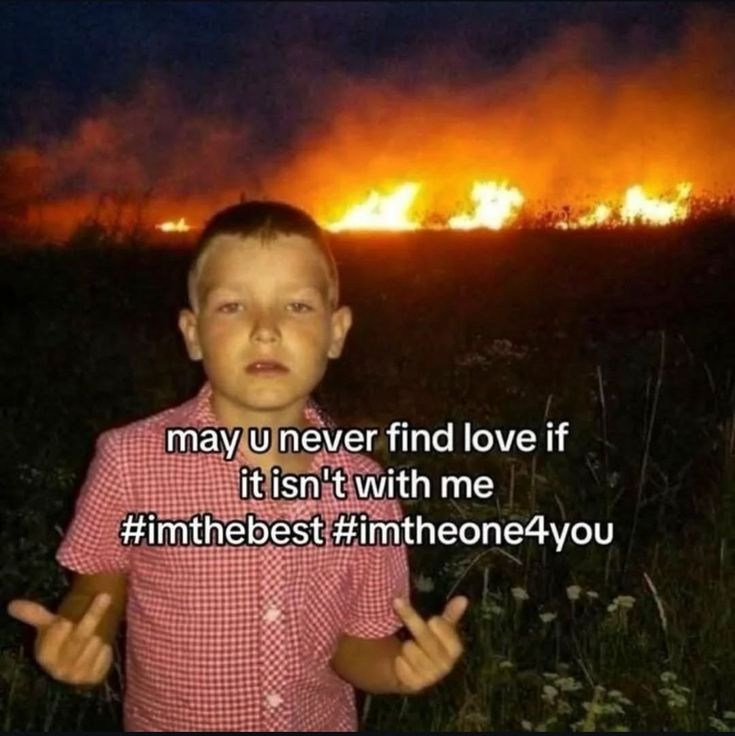

Softly Yours
i made this little space just for you. aku pengen kamu ngerasain sedikit dari apa yang aku rasain setiap hari.
i made this little space just for you. aku pengen kamu ngerasain sedikit dari apa yang aku rasain setiap hari.
Cari pasangan kartu yang sama!
Selesaikan dulu baru bisa next halaman.
Moves: 0
I’m not keeping things unspoken because I’m unsure. I’m here because I’m sure about wanting this closeness with you. I’ve been honest about how I feel, and I don’t want to hide it. I enjoy what we have: the talks, the comfort, the way we stay close. No labels, no pressure but also no pretending this is nothing. I want to keep choosing you in the ways I can. Being present, being real, and staying close because it feels right, not because I’m holding back, but because I’m genuinely here. Some things don’t need to be explained over and over. They’re already clear in the way I show up, and in how willingly I stay.
This song isn’t just a melody it feels like the quiet moments we share. “Lantas” fits when we’re already close, talking easily, staying connected, even without a label. It’s my way of saying what I don’t always say out loud.